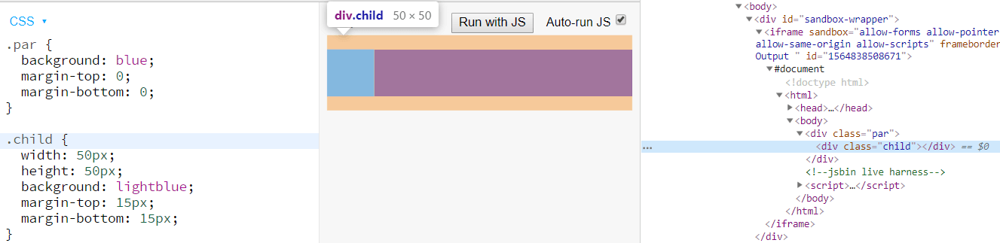
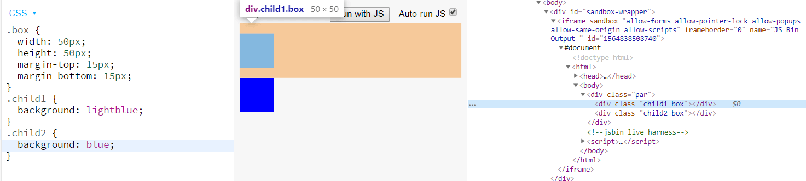
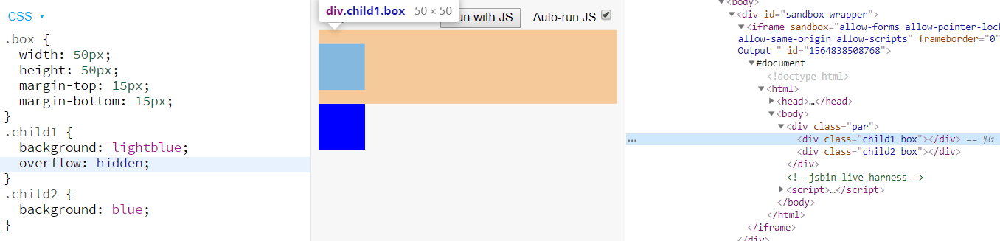
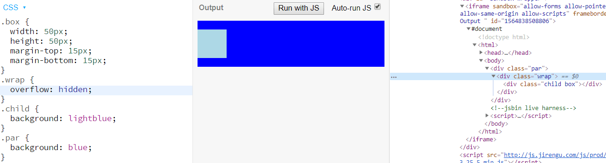
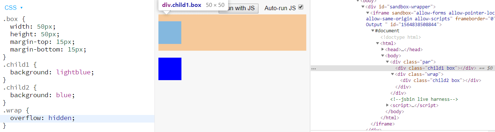
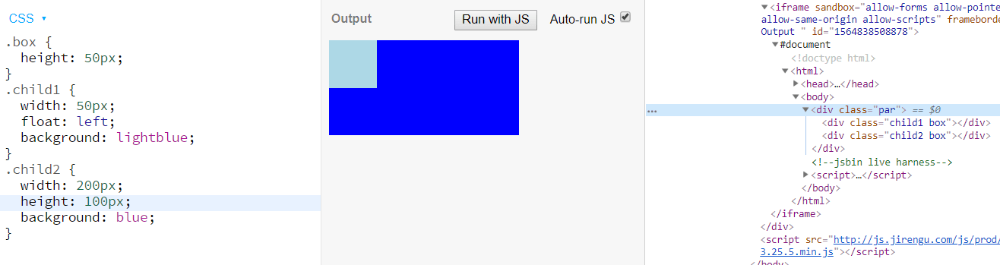
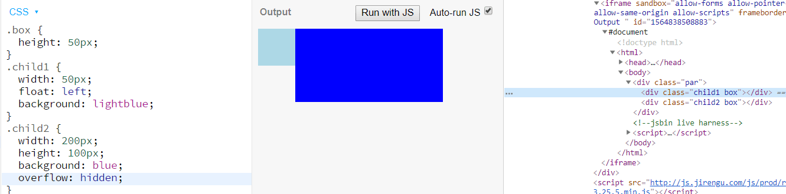
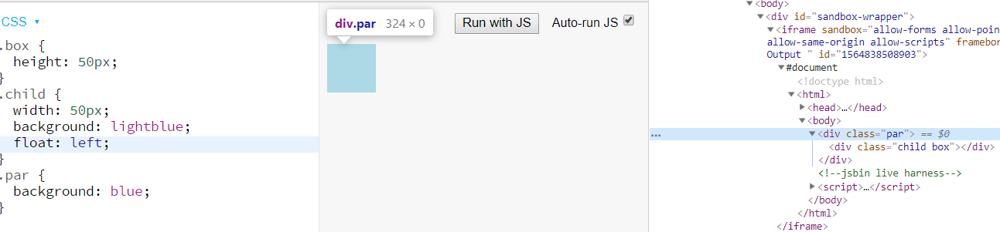
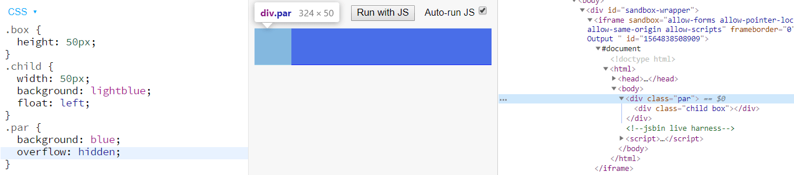

<!DOCTYPE html>
<html>
<head><meta name="generator" content="Hexo 3.8.0">
  <meta charset="utf-8">
  
  <title>《面试系列》之什么是BFC? | maczyt的网络日志</title>
  <meta name="viewport" content="width=device-width, initial-scale=1, maximum-scale=1">
  <meta name="description" content="面试时常常会被问到有关BFC的问题，虽然网上有关讲解BFC的文章很多，基本大篇理论知识，虽收获不少，但面对面试时，却不知如何回答，不能条理清晰、简单明了的回答出面试官想考察的内容，容易导致回答着把自己都给弄晕了(尤其在紧张的情绪下，非常容易导致越说越“乱”，从而造成面试官觉得你理解不到位的认知😭)。所以特此记录下来，一为了加深对BFC的理解，二则为了面试能更好的回答。 相关面试题 简述你对BFC">
<meta name="keywords" content="基础,面试,CSS">
<meta property="og:type" content="article">
<meta property="og:title" content="《面试系列》之什么是BFC?">
<meta property="og:url" content="https://maczyt.github.io/2019/08/03/《面试系列》之什么是BFC/index.html">
<meta property="og:site_name" content="maczyt的网络日志">
<meta property="og:description" content="面试时常常会被问到有关BFC的问题，虽然网上有关讲解BFC的文章很多，基本大篇理论知识，虽收获不少，但面对面试时，却不知如何回答，不能条理清晰、简单明了的回答出面试官想考察的内容，容易导致回答着把自己都给弄晕了(尤其在紧张的情绪下，非常容易导致越说越“乱”，从而造成面试官觉得你理解不到位的认知😭)。所以特此记录下来，一为了加深对BFC的理解，二则为了面试能更好的回答。 相关面试题 简述你对BFC">
<meta property="og:locale" content="default">
<meta property="og:image" content="https://maczyt.github.io/2019/08/03/《面试系列》之什么是BFC/1.png">
<meta property="og:image" content="https://maczyt.github.io/2019/08/03/《面试系列》之什么是BFC/2.png">
<meta property="og:image" content="https://maczyt.github.io/2019/08/03/《面试系列》之什么是BFC/3.png">
<meta property="og:image" content="https://maczyt.github.io/2019/08/03/《面试系列》之什么是BFC/4.png">
<meta property="og:image" content="https://maczyt.github.io/2019/08/03/《面试系列》之什么是BFC/5.png">
<meta property="og:image" content="https://maczyt.github.io/2019/08/03/《面试系列》之什么是BFC/6.png">
<meta property="og:image" content="https://maczyt.github.io/2019/08/03/《面试系列》之什么是BFC/7.png">
<meta property="og:image" content="https://maczyt.github.io/2019/08/03/《面试系列》之什么是BFC/8.png">
<meta property="og:image" content="https://maczyt.github.io/2019/08/03/《面试系列》之什么是BFC/9.png">
<meta property="og:updated_time" content="2019-08-03T16:57:13.786Z">
<meta name="twitter:card" content="summary">
<meta name="twitter:title" content="《面试系列》之什么是BFC?">
<meta name="twitter:description" content="面试时常常会被问到有关BFC的问题，虽然网上有关讲解BFC的文章很多，基本大篇理论知识，虽收获不少，但面对面试时，却不知如何回答，不能条理清晰、简单明了的回答出面试官想考察的内容，容易导致回答着把自己都给弄晕了(尤其在紧张的情绪下，非常容易导致越说越“乱”，从而造成面试官觉得你理解不到位的认知😭)。所以特此记录下来，一为了加深对BFC的理解，二则为了面试能更好的回答。 相关面试题 简述你对BFC">
<meta name="twitter:image" content="https://maczyt.github.io/2019/08/03/《面试系列》之什么是BFC/1.png">
  
    <link rel="alternate" href="/atom.xml" title="maczyt的网络日志" type="application/atom+xml">
  
  
    <link rel="icon" href="/favicon.ico">
  
  
    
  
  <link rel="stylesheet" href="/css/style.css">
  

</head>
</html>
<body>
  <div id="container">
    <div id="wrap">
      <header id="header">
  <div id="banner"></div>
  <div id="header-outer" class="outer">
    
    <div id="header-inner" class="inner">
      <nav id="sub-nav">
        
          <a id="nav-rss-link" class="nav-icon" href="/atom.xml" title="RSS Feed"></a>
        
        <a id="nav-search-btn" class="nav-icon" title="搜索"></a>
      </nav>
      <div id="search-form-wrap">
        <form action="//google.com/search" method="get" accept-charset="UTF-8" class="search-form"><input type="search" name="q" class="search-form-input" placeholder="Search"><button type="submit" class="search-form-submit">&#xF002;</button><input type="hidden" name="sitesearch" value="https://maczyt.github.io"></form>
      </div>
      <nav id="main-nav">
        <a id="main-nav-toggle" class="nav-icon"></a>
        
          <a class="main-nav-link" href="/">首页</a>
        
          <a class="main-nav-link" href="/archives">归档</a>
        
          <a class="main-nav-link" href="/about">关于</a>
        
      </nav>
      
    </div>
    <div id="header-title" class="inner">
      <h1 id="logo-wrap">
        <a href="/" id="logo">maczyt的网络日志</a>
      </h1>
      
    </div>
  </div>
</header>
      <div class="outer">
        <section id="main"><article id="post-《面试系列》之什么是BFC" class="article article-type-post" itemscope="" itemprop="blogPost">
  <div class="article-meta">
    <a href="/2019/08/03/《面试系列》之什么是BFC/" class="article-date">
  <time datetime="2019-08-03T14:38:31.000Z" itemprop="datePublished">2019-08-03</time>
</a>
    
  </div>
  <div class="article-inner">
    
    
      <header class="article-header">
        
  
    <h1 class="article-title" itemprop="name">
      《面试系列》之什么是BFC?
    </h1>
  

      </header>
    
    <div class="article-entry" itemprop="articleBody">
      
        <!-- Table of Contents -->
        
        <p>面试时常常会被问到有关<code>BFC</code>的问题，虽然网上有关讲解<code>BFC</code>的文章很多，基本大篇理论知识，虽收获不少，但面对面试时，却不知如何回答，不能条理清晰、简单明了的回答出面试官想考察的内容，容易导致回答着把自己都给弄晕了(尤其在紧张的情绪下，非常容易导致越说越“乱”，从而造成面试官觉得你理解不到位的认知😭)。所以特此记录下来，一为了加深对BFC的理解，二则为了面试能更好的回答。</p>
<h2 id="相关面试题"><a href="#相关面试题" class="headerlink" title="相关面试题"></a>相关面试题</h2><ol>
<li>简述你对BFC规范的理解</li>
<li>对BFC规范(块级格式化上下文：block formatting context)的理解</li>
<li>如何创建块级格式化上下文(block formatting context),BFC有什么用</li>
<li>对BFC规范的理解？</li>
<li>等等</li>
</ol>
<a id="more"></a>
<p>虽然上面题目看起来好像不太一样，但是其实最终考察的点都是一样的，咱们只需分为<code>什么是BFC</code>、<code>BFC有什么作用</code>和<code>如何创建BFC</code>子问题来依依回答即可。</p>
<h2 id="什么是BFC-What"><a href="#什么是BFC-What" class="headerlink" title="什么是BFC? (What)"></a>什么是BFC? (What)</h2><blockquote>
<p>逢管面试怎么问BFC，咱们就先给它回答一波<code>什么是BFC</code>。</p>
</blockquote>
<p>BFC称为块级格式化上下文，是CSS中的一种渲染机制。是一个拥有独立渲染区域的盒子(也可以理解为结界)，规定了内部元素如何布局，并且盒子内部元素与外部元素互不影响。</p>
<p>对应的还有IFC、GFC和FFC(后两个CSS3引入)</p>
<h2 id="BFC有什么作用-Why"><a href="#BFC有什么作用-Why" class="headerlink" title="BFC有什么作用? (Why)"></a>BFC有什么作用? (Why)</h2><p>上面我们知道<code>BFC</code>规定了内部元素的布局渲染，让我们查看下CSS规范文档，看下<code>BFC</code>有哪些规则:</p>
<h3 id="文档规则"><a href="#文档规则" class="headerlink" title="文档规则"></a>文档规则</h3><ol>
<li>在一个块格式化上下文中，盒在垂直方向一个接一个地放置，从包含块的顶部开始。</li>
<li>两个兄弟盒之间的垂直距离由<code>margin</code>属性决定。</li>
<li>同一个块格式化上下文中的相邻块级盒之间的垂直外边距会合并。</li>
<li>同一个块格式化上下文中，每个盒的左外边界（left outer edge）挨着包含块的左外边界（对于从右向左的格式化，右外边界挨着）。</li>
<li>BFC的区域不会与float box重叠。</li>
<li>计算BFC的高度时，浮动元素也参与计算。</li>
</ol>
<p>详细规则可以查看<a href="http://www.ayqy.net/doc/css2-1/visuren.html#block-formatting" target="_blank" rel="noopener">9.4.1 块格式化上下文</a></p>
<h3 id="规则图解"><a href="#规则图解" class="headerlink" title="规则图解"></a>规则图解</h3><p>规则1和规则2应该是好理解的，这里就不展开叙述，如果你不明白，那么你可能学了个假CSS。😂</p>
<h4 id="同一个块格式化上下文中的相邻块级盒之间的垂直外边距会合并"><a href="#同一个块格式化上下文中的相邻块级盒之间的垂直外边距会合并" class="headerlink" title="同一个块格式化上下文中的相邻块级盒之间的垂直外边距会合并"></a>同一个块格式化上下文中的相邻块级盒之间的垂直外边距会合并</h4><p>这里是讲<code>margin collapse</code>, 其实是有如下情况会发生合并: 1. 父子外边距；2. 兄弟外边距；3. 没有高度的元素自身<code>margin-top</code>和<code>margin-bottom</code>会合并。</p>
<p>不过有几点需要注意：</p>
<ol>
<li><strong>需要属于普通流中的盒子</strong>: 也就是脱离文档流不算</li>
<li><strong>毗邻</strong>: 也就是元素间没有被<code>padding</code>、<code>border</code>、<code>clear</code>和<code>line box</code>分隔开</li>
<li><strong>垂直</strong>: 也就是<code>margin-top</code>和<code>margin-bottom</code></li>
</ol>
<p>只有满足上面几点才会发生margin合并效果。</p>
<p></p>
<p>上图可以看到，父子的<code>margin-top</code>和<code>margin-bottom</code>发生了合并。如何解决呢？触发元素的BFC即可(<em>注：下面都以设置元素<code>overflow:hidden</code>来触发</em>)，不过这里问题来了，我们是触发父元素的BFC还是子元素的BFC呢？</p>
<p>经过试验，我发现只有触发父元素的BFC才能避免margin合并，触发子元素的BFC并无效果。</p>
<p>这里父元素生效可以借用标准来解释:</p>
<blockquote>
<p>Margins of elements that establish new block formatting contexts (such as floats and elements with “overflow” other than “visible”) do not collapse with their in-flow children.（创建了BFC的元素不会和它的子元素发生外边距叠加）</p>
</blockquote>
<p>那触发子元素为何没有生效呢？这里我们先看下兄弟之间的合并。</p>
<p></p>
<p>同样发生了margin合并，这里不存在父子关系，所以我们随便触发某个元素的BFC来看看效果。</p>
<p></p>
<p>发现还是发生margin合并，按照规则，虽然触发了child1的BFC，但是两个元素还是处于同一个BFC。</p>
<p>经过以上试验，我得出了未完全经官方认知的结论:</p>
<p><strong>BFC影响的是内部元素</strong></p>
<ol>
<li>比如父子中，设置child为BFC，因为影响的是内部，所以child还是和par处于同一个BFC中</li>
<li>兄弟中，设置child1为BFC，影响的是child1的子元素，但child1和child2还是处于同一个BFC</li>
</ol>
<p>所以我可以使用一个div进行包裹，并触发该div的BFC，从而使得处于不同的BFC中，来避免margin合并。</p>
<p></p>
<p></p>
<p>完美！🎉，我们这样就可以通过触发BFC来避免margin合并了，当然避免margin合并还有很多方法，比如设置<code>border</code>等等。</p>
<h4 id="BFC的区域不会与float-box重叠"><a href="#BFC的区域不会与float-box重叠" class="headerlink" title="BFC的区域不会与float box重叠"></a>BFC的区域不会与float box重叠</h4><p>当我们设置一个元素为float，该元素脱离文档流，会覆盖在下方元素上面。</p>
<p></p>
<p>而如果设置元素BFC，将不会与float重叠，这样我们可以通过该属性来实现自适应两栏布局。</p>
<p></p>
<h4 id="计算BFC的高度时，浮动元素也参与计算"><a href="#计算BFC的高度时，浮动元素也参与计算" class="headerlink" title="计算BFC的高度时，浮动元素也参与计算"></a>计算BFC的高度时，浮动元素也参与计算</h4><p>因为浮动元素会脱离文档流，所以包含块元素的高度不会包含该浮动元素，导致高度发生塌陷。使用BFC，包含块的高度包含浮动元素在内。</p>
<p></p>
<p></p>
<p>根据规则+实例，给出BFC有什么作用。</p>
<h2 id="如何创建BFC？-How"><a href="#如何创建BFC？-How" class="headerlink" title="如何创建BFC？(How)"></a>如何创建BFC？(How)</h2><ol>
<li>根元素，即<code>html</code></li>
<li><code>float</code>的值不为<code>none</code></li>
<li><code>overflow</code>的值不为<code>visible</code></li>
<li><code>display</code>的值为<code>inline-block</code>、<code>table-cell</code>、<code>table-caption</code></li>
<li><code>position</code>的值为<code>absolute</code>或<code>fixed</code></li>
<li>等等</li>
</ol>
<hr>
<p>如有不对之处，还恳请指出，谢谢~ 🖖</p>
<p><del>好累，花了将近4个小时，第一遍没保存，又重新写了一遍。😭</del></p>

      
    </div>
    <footer class="article-footer">
      <a data-url="https://maczyt.github.io/2019/08/03/《面试系列》之什么是BFC/" data-id="cjyzz3c1a0005r4vvh8lgkah4" class="article-share-link">分享</a>
      
      
      
  <ul class="article-tag-list"><li class="article-tag-list-item"><a class="article-tag-list-link" href="/tags/CSS/">CSS</a></li><li class="article-tag-list-item"><a class="article-tag-list-link" href="/tags/基础/">基础</a></li><li class="article-tag-list-item"><a class="article-tag-list-link" href="/tags/面试/">面试</a></li></ul>

    </footer>
  </div>
  
    
 <script src="/jquery/jquery.min.js"></script>
  <div id="random_posts">
    <h2>推荐文章</h2>
    <div class="random_posts_ul">
      <script>
          var random_count =4
          var site = {BASE_URI:'/'};
          function load_random_posts(obj) {
              var arr=site.posts;
              if (!obj) return;
              // var count = $(obj).attr('data-count') || 6;
              for (var i, tmp, n = arr.length; n; i = Math.floor(Math.random() * n), tmp = arr[--n], arr[n] = arr[i], arr[i] = tmp);
              arr = arr.slice(0, random_count);
              var html = '<ul>';
            
              for(var j=0;j<arr.length;j++){
                var item=arr[j];
                html += '<li><strong>' + 
                item.date + ':&nbsp;&nbsp;<a href="' + (site.BASE_URI+item.uri) + '">' + 
                (item.title || item.uri) + '</a></strong>';
                if(item.excerpt){
                  html +='<div class="post-excerpt">'+item.excerpt+'</div>';
                }
                html +='</li>';
                
              }
              $(obj).html(html + '</ul>');
          }
          $('.random_posts_ul').each(function () {
              var c = this;
              if (!site.posts || !site.posts.length){
                  $.getJSON(site.BASE_URI + 'js/posts.js',function(json){site.posts = json;load_random_posts(c)});
              } 
               else{
                load_random_posts(c);
              }
          });
      </script>
    </div>
  </div>

    
<nav id="article-nav">
  
    <a href="/2019/08/13/《面试系列》之什么是event-loop/" id="article-nav-newer" class="article-nav-link-wrap">
      <strong class="article-nav-caption">上一篇</strong>
      <div class="article-nav-title">
        
          《面试系列》之什么是event loop
        
      </div>
    </a>
  
  
    <a href="/2019/07/13/使用网格grid布局实现bootstrap的栅格系统/" id="article-nav-older" class="article-nav-link-wrap">
      <strong class="article-nav-caption">下一篇</strong>
      <div class="article-nav-title">使用网格grid布局实现bootstrap的栅格系统</div>
    </a>
  
</nav>

  
</article>
 
     
  <div class="comments" id="comments">
    
     
       
      <div id="cloud-tie-wrapper" class="cloud-tie-wrapper"></div>
    
       
      
      
           <div id="gitment_comments"></div>
    
  </div>
 
  

</section>
           
    <aside id="sidebar">
  
    

  
    
    <div class="widget-wrap">
    
      <div class="widget" id="toc-widget-fixed">
      
        <strong class="toc-title">文章目录</strong>
        <div class="toc-widget-list">
              <ol class="toc"><li class="toc-item toc-level-2"><a class="toc-link" href="#相关面试题"><span class="toc-number">1.</span> <span class="toc-text">相关面试题</span></a></li><li class="toc-item toc-level-2"><a class="toc-link" href="#什么是BFC-What"><span class="toc-number">2.</span> <span class="toc-text">什么是BFC? (What)</span></a></li><li class="toc-item toc-level-2"><a class="toc-link" href="#BFC有什么作用-Why"><span class="toc-number">3.</span> <span class="toc-text">BFC有什么作用? (Why)</span></a><ol class="toc-child"><li class="toc-item toc-level-3"><a class="toc-link" href="#文档规则"><span class="toc-number">3.1.</span> <span class="toc-text">文档规则</span></a></li><li class="toc-item toc-level-3"><a class="toc-link" href="#规则图解"><span class="toc-number">3.2.</span> <span class="toc-text">规则图解</span></a><ol class="toc-child"><li class="toc-item toc-level-4"><a class="toc-link" href="#同一个块格式化上下文中的相邻块级盒之间的垂直外边距会合并"><span class="toc-number">3.2.1.</span> <span class="toc-text">同一个块格式化上下文中的相邻块级盒之间的垂直外边距会合并</span></a></li><li class="toc-item toc-level-4"><a class="toc-link" href="#BFC的区域不会与float-box重叠"><span class="toc-number">3.2.2.</span> <span class="toc-text">BFC的区域不会与float box重叠</span></a></li><li class="toc-item toc-level-4"><a class="toc-link" href="#计算BFC的高度时，浮动元素也参与计算"><span class="toc-number">3.2.3.</span> <span class="toc-text">计算BFC的高度时，浮动元素也参与计算</span></a></li></ol></li></ol></li><li class="toc-item toc-level-2"><a class="toc-link" href="#如何创建BFC？-How"><span class="toc-number">4.</span> <span class="toc-text">如何创建BFC？(How)</span></a></li></ol>
          </div>
      </div>
    </div>

  
    

  
    
  
    
  
    

  
    
  
    <!--微信公众号二维码-->


  
</aside>

      </div>
      <footer id="footer">
  
  <div class="outer">
    <div id="footer-left">
      &copy; 2014 - 2019 maczyt&nbsp;|&nbsp;
      主题 <a href="https://github.com/giscafer/hexo-theme-cafe/" target="_blank">Cafe</a>
    </div>
     <div id="footer-right">
      联系方式&nbsp;|&nbsp;369280416@qq.com
    </div>
  </div>
</footer>
 <script src="/jquery/jquery.min.js"></script>
    </div>
    <nav id="mobile-nav">
  
    <a href="/" class="mobile-nav-link">首页</a>
  
    <a href="/archives" class="mobile-nav-link">归档</a>
  
    <a href="/about" class="mobile-nav-link">关于</a>
  
</nav>
    
<script>
// Elevator script included on the page, already.
window.onload = function() {
  var elevator = new Elevator({
    selector:'.back-to-top-btn',
    element: document.querySelector('.back-to-top-btn'),
    duration: 1000 // milliseconds
  });
}
</script>
      

  
    <script>
      var cloudTieConfig = {
        url: document.location.href, 
        sourceId: "",
        productKey: "e2fb4051c49842688ce669e634bc983f",
        target: "cloud-tie-wrapper"
      };
    </script>
    <script src="https://img1.ws.126.net/f2e/tie/yun/sdk/loader.js"></script>
    

  


<!-- author:forvoid begin -->
<!-- author:forvoid begin -->

  <link rel="stylesheet" href="https://imsun.github.io/gitment/style/default.css">
  <script src="https://imsun.github.io/gitment/dist/gitment.browser.js"></script> 
  <script>
  var gitment = new Gitment({
    // id: '页面 ID', // 可选。默认为 location.href
    owner: 'maczyt',
    repo: 'maczyt.github.io',
    oauth: {
    client_id: 'ec909c607ca0603ee69f',
    client_secret: '611d57c463dd5cbcef431a48c0ff777679387238',
    }
  })
  gitment.render(document.getElementById("gitment_comments"))
</script>


<!-- author:forvoid end -->

<!-- author:forvoid end -->


  
    <script type="text/x-mathjax-config">
      MathJax.Hub.Config({
        tex2jax: {
          inlineMath: [ ['$','$'], ["\\(","\\)"]  ],
          processEscapes: true,
          skipTags: ['script', 'noscript', 'style', 'textarea', 'pre', 'code']
        }
      })
    </script>

    <script type="text/x-mathjax-config">
      MathJax.Hub.Queue(function() {
        var all = MathJax.Hub.getAllJax(), i;
        for (i=0; i < all.length; i += 1) {
          all[i].SourceElement().parentNode.className += ' has-jax';
        }
      })
    </script>
    <script type="text/javascript" src="https://cdn.rawgit.com/mathjax/MathJax/2.7.1/MathJax.js?config=TeX-AMS-MML_HTMLorMML"></script>
  


 <script src="/js/is.js"></script>


  <link rel="stylesheet" href="/fancybox/jquery.fancybox.css">
  <script src="/fancybox/jquery.fancybox.pack.js"></script>


<script src="/js/script.js"></script>
<script src="/js/elevator.js"></script>
  </div>
</body>
</html>